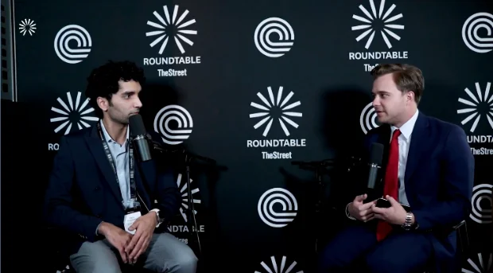
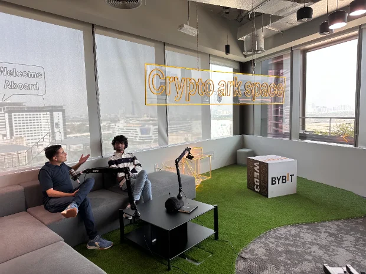
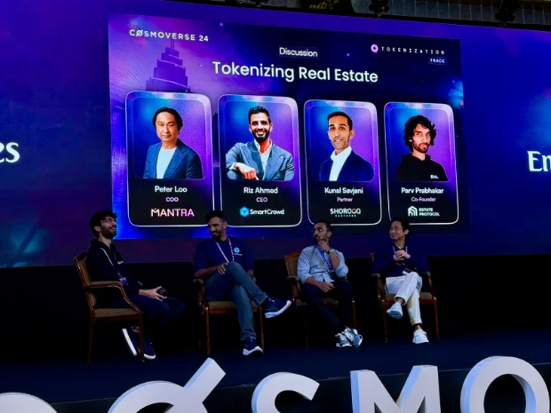
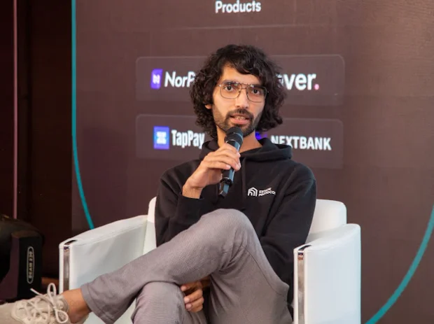

TheStreet / Roundtable · February 2026
What tokenization could unlock for real estate.
A conversation about liquidity, property ownership structures, and bringing real estate onchain.
Read the interviewMedia & speaking
Interviews, coverage, and conversations about real estate, tokenization, and building in crypto.

TheStreet / Roundtable · February 2026
A conversation about liquidity, property ownership structures, and bringing real estate onchain.
Read the interviewA 34-minute conversation on Estate Protocol, the UAE property market, my background, and building the team.
Listen to the episodeA conversation about tokenizing property and the work behind Estate Protocol.
Watch on YouTube
Bybit · Crypto Ark
From the Crypto Ark podcast recording.
Coverage of asset tokenization in India.
Read articleMy comments on India’s 2023 Union Budget and the use of crypto beyond speculation.
Read articleQuoted on fractional ownership, NFT supply, and investor education.
Read articleAn early profile of Estate Protocol and the idea behind the company.
Read article
Cosmoverse · Dubai
Panel discussion on bringing property ownership onchain.
Speaker directory
BW Businessworld
Speaking about digital assets and tokenization.
Panelist for “Opportunities for India in a global crypto context.”
View the event agendaAn educational session introducing blockchain and cryptocurrency.
View the session announcementArbitrum Founder House
Supported founders through Arbitrum Founder House programs in Bengaluru and New York City.
Arbitrum Foundation
Secured funding for Estate Protocol and delivered milestones for its property offerings and platform.
SmartCrowd partnership
Jeremy Allaire publicly acknowledged the Golden Visa initiative developed through our SmartCrowd partnership.
Read the storyGet in touch